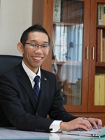

01
会計サービス
事業所で入力作成した会計データをお預かりして、会計資料と照合を行い、入力内容の確認を行います。入力者と違う目線で会計仕訳を確認することにより、入力の間違いや勘定科目の間違いを正し、適切な会計仕訳の入力がされるようになります。
アイアンドエス税理士法人のホームページにお越しいただき、ありがとうございます。
弊社は、「わかりやすい税務会計サービス」をサービスの基本として、中小企業の経営者の経営のお手伝いをさせていただいております。
茨城県土浦市、つくば市を中心に、茨城県県南地方のお客様の税務・会計・経営のご相談に対応しております。
経営者は、売上の拡大、資金繰り、新商品の開発、従業員の採用や教育など、多様な課題に直面します。多くの中小企業では、そのような課題を経営者の方がお一人で、考え、悩み、不安の中で自分なりの答えを出して日々の経営にあたっているのではないでしょうか。
私たちは、税理士は中小企業経営者の一番身近な相談相手であると考えております。どうしたら良いかわからなくて来る社長様から、自分なりの答えを持っているがその確認や後押しが欲しくて来る社長様まで多様です。私たちにご相談いただくことで、少しでも気持ちが楽になり、経営に前向きなチカラが生まれてくれればとても嬉しいです。
当事務所は、初代所長が昭和52年に、茨城県土浦市で会計事務所を開設して以来、地元の経営者とともに、成長してまいりました。高度成長期やバブル経済、そしてその後の長引く不況の中で発生する経営者の課題を経営者と一緒に考え、解決してまいりました。
平成24年6月にそれまでの個人会計事務所から、アイアンドエス税理士法人へ、組織変更を行うと同時に、事業承継を行い、公認会計士・税理士である新代表を迎えました。
現在は、業界での長い経験と知識と最新の経営手法の両方を取り入れ、経営者の課題に最適な税務・会計サービスを提供できるように努力しているところであります。

事業所で入力作成した会計データをお預かりして、会計資料と照合を行い、入力内容の確認を行います。入力者と違う目線で会計仕訳を確認することにより、入力の間違いや勘定科目の間違いを正し、適切な会計仕訳の入力がされるようになります。
事業所に、会計入力担当者をおくことができない中小企業者様、会計入力担当者が急に退職してしまい後任が見つからない法人様など、会計入力そのものを弊社で請負います。事業所では、現金出納帳、領収書、請求書などの必要書類をまとめていただくだけで、会計仕訳の作成及び会計データの入力は、会計事務所で行います。
個人事業主は、毎年3月15日までに確定申告を行います。1年間の会計データをもとに決算業務を行い、青色申告決算書（または、白色収支決算書）を作成し、個人の確定申告書を作成、申告を行います。青色申告専従者給与の設定、青色申告特別控除などの特典を活用し、適切な節税を行います。また、消費税等の申告が必要な場合は、合わせて消費税等の申告書を作成します。
毎年、1月1日から12月31日までの間に、不動産などを譲渡して利益が発生した場合は、翌年3月15日までに確定申告を行います。
1年間の会計データをもとに決算業務を行い、決算書（貸借対照表、損益計算書、株主資本等変動計算書）を作成し、法人税、住民税、事業税の確定申告書を作成、申告を行います。適切な役員報酬の設定、貸倒引当金の計上、減価償却方法の選択、特別償却などの特典を活用し、適切な節税を行います。また、消費税等の申告が必要な場合は、合わせて消費税等の申告書を作成します。
毎年1月1日から12月31日までの間に、贈与を行った場合は、翌年3月15日までに贈与税に関する確定申告を行います。贈与税の基礎控除、贈与税の配偶者控除などの特典、相続時精算課税制度などの活用など、納税者にとって有利になる確定申告のお手伝いを行います。
亡くなった方が一定の財産をお持ちの場合、なくなった日の翌日から10ヶ月以内に相続税の申告が必要になります。相続人の確定、相続財産と債務の確定、遺産分割協議など、広範囲にわたる作業と準備が必要になります。また、小規模宅地の評価減の特例や、株式の持分の評価など、税理士の経験の差が、納税額の差に直結する分野でもありますので、弊社では複数の専門家が多面的に検討して、相続税の申告書を作成しています。
日本の社長の平均年齢が60歳を超えて、多くの会社が後継者へ事業承継する時期となっております。事業承継は、「経営の承継」と「財産の承継」という側面を持っており、財産の承継は、課税の問題を避けては通れません。弊社では数多くの経験と自社の事業承継の経験から、適切な事業承継対策のご提案を行っております。
日本の中小企業はその8割が赤字と言われています。赤字の原因は、売上不振、不景気、競争の激化など様々なことが考えられます。しかし、2割の会社は黒字経営を続けているのです。その違いは、何でしょうか。その違いの一つが、事業計画があるかないかと言われています。事業計画があることにより、自社の事業が予想とどれくらいずれているのか、課題を把握し、どのような対策が必要なのかを考えることができるのです。弊社では、事業計画について、経営者とともに策定し、その実行をフォローしていきます。
茨城県土浦市、つくば市、つくばみらい市、石岡市、かすみがうら市、龍ケ崎市、取手市、牛久市、守谷市、稲敷市、稲敷郡、北相馬郡、筑西市、結城市、下妻市、常総市、桜川市、結城郡、古河市、坂東市、猿島郡、鹿嶋市、潮来市、神栖市、行方市、鉾田市、水戸市、笠間市、小美玉市、東茨城郡、その他茨城県全域／東京都、千葉県、埼玉県、栃木県
税務・会計・経営に関するご相談は、基本的にいつでも無料です。お気軽にお問合せください。